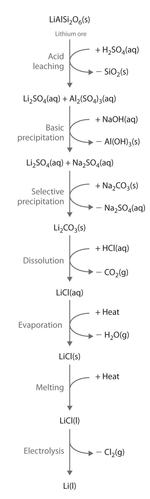
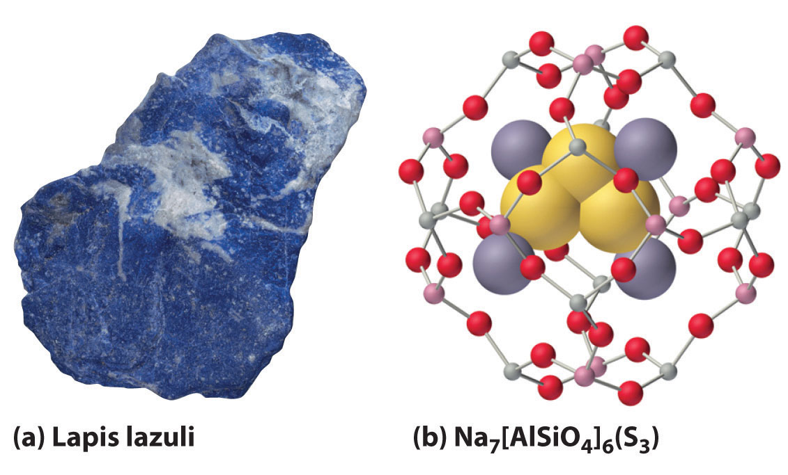
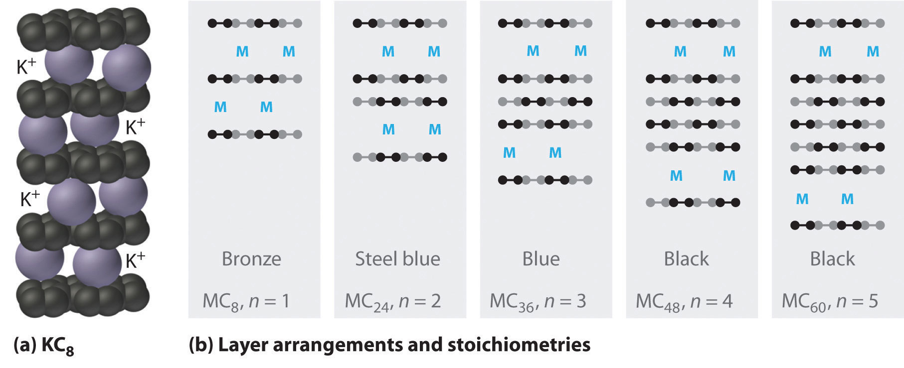
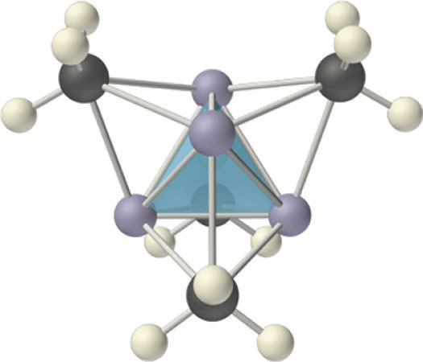

The alkali metals are so reactive that they are never found in nature in elemental form. Although some of their ores are abundant, isolating them from their ores is somewhat difficult. For these reasons, the group 1 elements were unknown until the early 19th century, when Sir Humphry Davy first prepared sodium (Na) and potassium (K) by passing an electric current through molten alkalis. (The ashes produced by the combustion of wood are largely composed of potassium and sodium carbonate.) Lithium (Li) was discovered 10 years later when the Swedish chemist Johan Arfwedson was studying the composition of a new Brazilian mineral. Cesium (Cs) and rubidium (Rb) were not discovered until the 1860s, when Robert Bunsen conducted a systematic search for new elements. Known to chemistry students as the inventor of the Bunsen burner, Bunsen’s spectroscopic studies of ores showed sky blue and deep red emission lines that he attributed to two new elements, Cs and Rb, respectively. Francium (Fr) is found in only trace amounts in nature, so our knowledge of its chemistry is limited. All the isotopes of Fr have very short half-lives, in contrast to the other elements in group 1.
Davy was born in Penzance, Cornwall, England. He was a bit of a wild man in the laboratory, often smelling and tasting the products of his experiments, which almost certainly shortened his life. He discovered the physiological effects that cause nitrous oxide to be called “laughing gas” (and became addicted to it!), and he almost lost his eyesight in an explosion of nitrogen trichloride (NCl3), which he was the first to prepare. Davy was one of the first to recognize the utility of Alessandro Volta’s “electric piles” (batteries). By connecting several “piles” in series and inserting electrodes into molten salts of the alkali metals and alkaline earth metals, he was able to isolate six previously unknown elements as pure metals: sodium, potassium, calcium, strontium, barium, and magnesium. He also discovered boron and was the first to prepare phosphine (PH3) and hydrogen telluride (H2Te), both of which are highly toxic.
Bunsen was born and educated in Göttingen, Germany. His early work dealt with organic arsenic compounds, whose highly toxic nature and explosive tendencies almost killed him and did cost him an eye. He designed the Bunsen burner, a reliable gas burner, and used it and emission spectra to discover cesium (named for its blue line) and rubidium (named for its red line).
Because the alkali metals are among the most potent reductants known, obtaining them in pure form requires a considerable input of energy. Pure lithium and sodium for example, are typically prepared by the electrolytic reduction of molten chlorides:
Equation 21.5
In practice, CaCl2 is mixed with LiCl to lower the melting point of the lithium salt. The electrolysis is carried out in an argon atmosphere rather than the nitrogen atmosphere typically used for substances that are highly reactive with O2 and water because Li reacts with nitrogen gas to form lithium nitride (Li3N). Metallic sodium is produced by the electrolysis of a molten mixture of NaCl and CaCl2. In contrast, potassium is produced commercially from the reduction of KCl by Na, followed by the fractional distillation of K(g). Although rubidium and cesium can also be produced by electrolysis, they are usually obtained by reacting their hydroxide salts with a reductant such as Mg:
Equation 21.6
2RbOH(s) + Mg(s) → 2Rb(l) + Mg(OH)2(s)Massive deposits of essentially pure NaCl and KCl are found in nature and are the major sources of sodium and potassium. The other alkali metals are found in low concentrations in a wide variety of minerals, but ores that contain high concentrations of these elements are relatively rare. No concentrated sources of rubidium are known, for example, even though it is the 16th most abundant element on Earth. Rubidium is obtained commercially by isolating the 2%–4% of Rb present as an impurity in micas, minerals that are composed of sheets of complex hydrated potassium–aluminum silicates.
Alkali metals are recovered from silicate ores in a multistep process that takes advantage of the pH-dependent solubility of selected salts of each metal ion. The steps in this process are leaching, which uses sulfuric acid to dissolve the desired alkali metal ion and Al3+ from the ore; basic precipitation to remove Al3+ from the mixture as Al(OH)3; selective precipitation of the insoluble alkali metal carbonate; dissolution of the salt again in hydrochloric acid; and isolation of the metal by evaporation and electrolysis. Figure 21.7 "Isolating Lithium from Spodumene, a Lithium Silicate Ore" illustrates the isolation of liquid lithium from a lithium silicate ore by this process.
Figure 21.7 Isolating Lithium from Spodumene, a Lithium Silicate Ore
The key steps are acid leaching, basic precipitation of aluminum hydroxide, selective precipitation of insoluble lithium carbonate, conversion to lithium chloride, evaporation, and electrolysis. The other alkali metals and the alkaline earth metals are recovered from their ores by similar processes.
Various properties of the group 1 elements are summarized in Table 21.3 "Selected Properties of the Group 1 Elements". In keeping with overall periodic trends, the atomic and ionic radii increase smoothly from Li to Cs, and the first ionization energies decrease as the atoms become larger. As a result of their low first ionization energies, the alkali metals have an overwhelming tendency to form ionic compounds where they have a +1 charge. All the alkali metals have relatively high electron affinities because the addition of an electron produces an anion (M−) with an ns2 electron configuration. The densities of the elements generally increase from Li to Cs, reflecting another common trend: because the atomic masses of the elements increase more rapidly than the atomic volumes as you go down a group, the densest elements are near the bottom of the periodic table. An unusual trend in the group 1 elements is the smooth decrease in the melting and boiling points from Li to Cs. As a result, Cs (melting point = 28.5°C) is one of only three metals (the others are Ga and Hg) that are liquids at body temperature (37°C).
Table 21.3 Selected Properties of the Group 1 Elements
| Lithium | Sodium | Potassium | Rubidium | Cesium | Francium | |
|---|---|---|---|---|---|---|
| atomic symbol | Li | Na | K | Rb | Cs | Fr |
| atomic number | 3 | 11 | 19 | 37 | 55 | 87 |
| atomic mass | 6.94 | 22.99 | 39.10 | 85.47 | 132.91 | 223 |
| valence electron configuration | 2s1 | 3s1 | 4s1 | 5s1 | 6s1 | 7s1 |
| melting point/boiling point (°C) | 180.5/1342 | 97.8/883 | 63.5/759 | 39.3/688 | 28.5/671 | 27/— |
| density (g/cm3) at 25°C | 0.534 | 0.97 | 0.89 | 1.53 | 1.93 | — |
| atomic radius (pm) | 167 | 190 | 243 | 265 | 298 | — |
| first ionization energy (kJ/mol) | 520 | 496 | 419 | 403 | 376 | 393 |
| most common oxidation state | +1 | +1 | +1 | +1 | +1 | +1 |
| ionic radius (pm)* | 76 | 102 | 138 | 152 | 167 | — |
| electron affinity (kJ/mol) | −60 | −53 | −48 | −47 | −46 | — |
| electronegativity | 1.0 | 0.9 | 0.8 | 0.8 | 0.8 | 0.7 |
| standard electrode potential (E°, V) | −3.04 | −2.71 | −2.93 | −2.98 | −3.03 | — |
| product of reaction with O2 | Li2O | Na2O2 | KO2 | RbO2 | CsO2 | — |
| type of oxide | basic | basic | basic | basic | basic | — |
| product of reaction with N2 | Li3N | none | none | none | none | — |
| product of reaction with X2 | LiX | NaX | KX | RbX | CsX | — |
| product of reaction with H2 | LiH | NaH | KH | RbH | CsH | — |
| *The values cited are for four-coordinate ions except for Rb+ and Cs+, whose values are given for the six-coordinate ion. | ||||||
The standard reduction potentials (E°) of the alkali metals do not follow the trend based on ionization energies. (For more information on reduction potentials, see Chapter 19 "Electrochemistry"). Unexpectedly, lithium is the strongest reductant, and sodium is the weakest (Table 21.3 "Selected Properties of the Group 1 Elements"). Because Li+ is much smaller than the other alkali metal cations, its hydration energy is the highest. The high hydration energy of Li+ more than compensates for its higher ionization energy, making lithium metal the strongest reductant in aqueous solution. This apparent anomaly is an example of how the physical or the chemical behaviors of the elements in a group are often determined by the subtle interplay of opposing periodic trends.
All alkali metals are electropositive elements with an ns1 valence electron configuration, forming the monocation (M+) by losing the single valence electron. Because removing a second electron would require breaking into the (n − 1) closed shell, which is energetically prohibitive, the chemistry of the alkali metals is largely that of ionic compounds that contain M+ ions. However, as we discuss later, the lighter group 1 elements also form a series of organometallic compounds that contain polar covalent M–C bonds.
All the alkali metals react vigorously with the halogens (group 17) to form the corresponding ionic halides, where X is a halogen:
Equation 21.7
2M(s) + X2(s, l, g) → 2M+X−(s)Similarly, the alkali metals react with the heavier chalcogens (sulfur, selenium, and tellurium in group 16) to produce metal chalcogenides, where Y is S, Se, or Te:
Equation 21.8
2M(s) + Y(s) → M2Y(s)When excess chalcogen is used, however, a variety of products can be obtained that contain chains of chalcogen atoms, such as the sodium polysulfides (Na2Sn, where n = 2–6). For example, Na2S3 contains the S32− ion, which is V shaped with an S–S–S angle of about 103°. The one-electron oxidation product of the trisulfide ion (S3−) is responsible for the intense blue color of the gemstones lapis lazuli and blue ultramarine (Figure 21.8 "The Trisulfide Anion Is Responsible for the Deep Blue Color of Some Gemstones").
Figure 21.8 The Trisulfide Anion Is Responsible for the Deep Blue Color of Some Gemstones
(a) The rich blue color of lapis lazuli is due to small amounts of the normally unstable S3− anion. (b) The aluminosilicate cages of the minerals (zeolites) that make up the matrix of blue ultramarine stabilize the reactive anion; excess Na+ ions in the structure balance the negative charges on the zeolite framework and the S3− anion.
Reacting the alkali metals with oxygen, the lightest element in group 16, is more complex, and the stoichiometry of the product depends on both the metal:oxygen ratio and the size of the metal atom. For instance, when alkali metals burn in air, the observed products are Li2O (white), Na2O2 (pale yellow), KO2 (orange), RbO2 (brown), and CsO2 (orange). Only Li2O has the stoichiometry expected for a substance that contains two M+ cations and one O2− ion. In contrast, Na2O2 contains the O22− (peroxide) anion plus two Na+ cations. The other three salts, with stoichiometry MO2, contain the M+ cation and the O2− (superoxide) ion. Because O2− is the smallest of the three oxygen anions, it forms a stable ionic lattice with the smallest alkali metal cation (Li+). In contrast, the larger alkali metals—potassium, rubidium, and cesium—react with oxygen in air to give the metal superoxides. Because the Na+ cation is intermediate in size, sodium reacts with oxygen to form a compound with an intermediate stoichiometry: sodium peroxide. Under specific reaction conditions, however, it is possible to prepare the oxide, peroxide, and superoxide salts of all five alkali metals, except for lithium superoxide (LiO2).
A crystal of spodumene (LiAlSi2O6). This mineral is one of the most important lithium ores.
The chemistry of the alkali metals is largely that of ionic compounds containing the M+ ions.
The alkali metal peroxides and superoxides are potent oxidants that react, often vigorously, with a wide variety of reducing agents, such as charcoal or aluminum metal. For example, Na2O2 is used industrially for bleaching paper, wood pulp, and fabrics such as linen and cotton. In submarines, Na2O2 and KO2 are used to purify and regenerate the air by removing the CO2 produced by respiration and replacing it with O2. Both compounds react with CO2 in a redox reaction in which O22− or O2− is simultaneously oxidized and reduced, producing the metal carbonate and O2:
Equation 21.9
2Na2O2(s) + 2CO2(g) → 2Na2CO3(s) + O2(g)Equation 21.10
4KO2(s) + 2CO2(g) → 2K2CO3(s) + 3O2(g)The presence of water vapor, the other product of respiration, makes KO2 even more effective at removing CO2 because potassium bicarbonate, rather than potassium carbonate, is formed:
Equation 21.11
4KO2(s) + 4CO2(g) + 2H2O(g) → 4KHCO3(s) + 3O2(g)Notice that 4 mol of CO2 are removed in this reaction, rather than 2 mol in Equation 21.10.
Lithium, the lightest alkali metal, is the only one that reacts with atmospheric nitrogen, forming lithium nitride (Li3N). Lattice energies again explain why the larger alkali metals such as potassium do not form nitrides: packing three large K+ cations around a single relatively small anion is energetically unfavorable. In contrast, all the alkali metals react with the larger group 15 elements phosphorus and arsenic to form metal phosphides and arsenides (where Z is P or As):
Equation 21.12
12M(s) + Z4(s) → 4M3Z(s)Because of lattice energies, only lithium forms a stable oxide and nitride.
The alkali metals react with all group 14 elements, but the compositions and properties of the products vary significantly. For example, reaction with the heavier group 14 elements gives materials that contain polyatomic anions and three-dimensional cage structures, such as K4Si4 whose structure is shown here. In contrast, lithium and sodium are oxidized by carbon to produce a compound with the stoichiometry M2C2 (where M is Li or Na):
Equation 21.13
2M(s) + 2C(s) → M2C2(s)The three-dimensional cage structure of the Si44−ion in the ionic compound K4S4. The Si44− ion is isoelectronic and isostructural with the P4 molecule.
The same compounds can be obtained by reacting the metal with acetylene (C2H2). In this reaction, the metal is again oxidized, and hydrogen is reduced:
Equation 21.14
2M(s) + C2H2(g) → M2C2(s) + H2(g)The acetylide ion (C22−), formally derived from acetylene by the loss of both hydrogens as protons, is a very strong base. Reacting acetylide salts with water produces acetylene and MOH(aq).
The heavier alkali metals (K, Rb, and Cs) also react with carbon in the form of graphite. Instead of disrupting the hexagonal sheets of carbon atoms, however, the metals insert themselves between the sheets of carbon atoms to give new substances called graphite intercalation compoundsA compound that forms when heavier alkali metals react with carbon in the form of graphite and insert themselves between the sheets of carbon atoms. (part (a) in Figure 21.9 "Graphite Intercalation Compounds"). The stoichiometries of these compounds include MC60 and MC48, which are black/gray; MC36 and MC24, which are blue; and MC8, which is bronze (part (b) in Figure 21.9 "Graphite Intercalation Compounds"). The remarkably high electrical conductivity of these compounds (about 200 times greater than graphite) is attributed to a net transfer of the valence electron of the alkali metal to the graphite layers to produce, for example, K+C8−.
Figure 21.9 Graphite Intercalation Compounds
Reacting graphite with alkali metals such as K, Rb, and Cs results in partial reduction of the graphite and insertion of layers of alkali metal cations between sets of n layers of carbon atoms. (a) In KC8, layers of K+ ions are inserted between every pair of carbon layers, giving n = 1. (b) The stoichiometry and color of intercalation compounds depend on the number of layers of carbon atoms (n) between each layer of intercalated metal atoms. This schematic diagram illustrates the most common structures that have been observed.
All the alkali metals react directly with gaseous hydrogen at elevated temperatures to produce ionic hydrides (M+H−):
Equation 21.15
2M(s) + H2(g) → 2MH(s)All are also capable of reducing water to produce hydrogen gas:
Equation 21.16
Although lithium reacts rather slowly with water, sodium reacts quite vigorously (Figure 21.10 "Reacting Sodium with Water"), and the heavier alkali metals (K, Rb, and Cs) react so vigorously that they invariably explode. This trend, which is not consistent with the relative magnitudes of the reduction potentials of the elements, serves as another example of the complex interplay of different forces and phenomena—in this case, kinetics and thermodynamics. Although the driving force for the reaction is greatest for lithium, the heavier metals have lower melting points. The heat liberated by the reaction causes them to melt, and the larger surface area of the liquid metal in contact with water greatly accelerates the reaction rate.
Figure 21.10 Reacting Sodium with Water

Like most elements in groups 1 and 2, sodium reacts violently with water. The products are the Na+(aq) ion and hydrogen gas, which is potentially explosive when mixed with air.
Alkali metal cations are found in a wide variety of ionic compounds. In general, any alkali metal salt can be prepared by reacting the alkali metal hydroxide with an acid and then evaporating the water:
Equation 21.17
2MOH(aq) + H2SO4(aq) → M2SO4(aq) + 2H2O(l)Equation 21.18
MOH(aq) + HNO3(aq) → MNO3(aq) + H2O(l)Hydroxides of alkali metals also can react with organic compounds that contain an acidic hydrogen to produce a salt. An example is the preparation of sodium acetate (CH3CO2Na) by reacting sodium hydroxide and acetic acid:
Equation 21.19
CH3CO2H(aq) + NaOH(s) → CH3CO2Na(aq) + H2O(l)Soap is a mixture of the sodium and potassium salts of naturally occurring carboxylic acids, such as palmitic acid [CH3(CH2)14CO2H] and stearic acid [CH3(CH2)16CO2H]. Lithium salts, such as lithium stearate [CH3(CH2)14CO2Li], are used as additives in motor oils and greases.
Because of their low positive charge (+1) and relatively large ionic radii, alkali metal cations have only a weak tendency to react with simple Lewis bases to form metal complexes like those discussed in Chapter 17 "Solubility and Complexation Equilibriums". Complex formation is most significant for the smallest cation (Li+) and decreases with increasing radius. In aqueous solution, for example, Li+ forms the tetrahedral [Li(H2O)4]+ complex. In contrast, the larger alkali metal cations form octahedral [M(H2O)6]+ complexes. Complex formation is primarily due to the electrostatic interaction of the metal cation with polar water molecules. Because of their high affinity for water, anhydrous salts that contain Li+ and Na+ ions (such as Na2SO4) are often used as drying agents. These compounds absorb trace amounts of water from nonaqueous solutions to form hydrated salts, which are then easily removed from the solution by filtration.
The tetrahedral [Li(H2O)4]+and octahedral [Rb(H2O)6]+complexes. The Li+ ion is so small that it can accommodate only four water molecules around it, but the larger alkali metal cations tend to bind six water molecules.
Because of their low positive charge (+1) and relatively large ionic radii, alkali metal cations have only a weak tendency to form complexes with simple Lewis bases.
Electrostatic interactions also allow alkali metal ions to form complexes with certain cyclic polyethers and related compounds, such as crown ethers and cryptands. As discussed in Chapter 13 "Solutions", crown ethersA cyclic polyether that has four or more oxygen atoms separated by two or three carbon atoms. A central cavity can accommodate a metal ion coordinated to the ring of oxygen atoms. are cyclic polyethers that contain four or more oxygen atoms separated by two or three carbon atoms. All crown ethers have a central cavity that can accommodate a metal ion coordinated to the ring of oxygen atoms, and crown ethers with rings of different sizes prefer to bind metal ions that fit into the cavity. For example, 14-crown-4, with the smallest cavity that can accommodate a metal ion, has the highest affinity for Li+, whereas 18-crown-6 forms the strongest complexes with K+ (part (a) in Figure 13.7 "Crown Ethers and Cryptands").
CryptandsConsisting of three chains connected by two nitrogen atoms, this compound can completely encapsulate a metal ion of the appropriate size, coordinating to the metal by the lone pairs of electrons on each oxygen and the two nitrogen atoms. are more nearly spherical analogues of crown ethers and are even more powerful and selective complexing agents. Cryptands consist of three chains containing oxygen that are connected by two nitrogen atoms (part (b) in Figure 13.7 "Crown Ethers and Cryptands"). They can completely surround (encapsulate) a metal ion of the appropriate size, coordinating to the metal by a lone pair of electrons on each O atom and the two N atoms. Like crown ethers, cryptands with different cavity sizes are highly selective for metal ions of particular sizes. Crown ethers and cryptands are often used to dissolve simple inorganic salts such as KMnO4 in nonpolar organic solvents (Figure 13.8 "Effect of a Crown Ether on the Solubility of KMnO").
A remarkable feature of the alkali metals is their ability to dissolve reversibly in liquid ammonia. Just as in their reactions with water, reacting alkali metals with liquid ammonia eventually produces hydrogen gas and the metal salt of the conjugate base of the solvent—in this case, the amide ion (NH2−) rather than hydroxide:
Equation 21.20
Solvated electrons. The presence of solvated electrons (e−, NH3) in solutions of alkali metals in liquid ammonia is indicated by the intense color of the solution and its electrical conductivity.
where the (am) designation refers to an ammonia solution, analogous to (aq) used to indicate aqueous solutions. Without a catalyst, the reaction in Equation 21.20 tends to be rather slow. In many cases, the alkali metal amide salt (MNH2) is not very soluble in liquid ammonia and precipitates, but when dissolved, very concentrated solutions of the alkali metal are produced. One mole of Cs metal, for example, will dissolve in as little as 53 mL (40 g) of liquid ammonia. The pure metal is easily recovered when the ammonia evaporates.
Solutions of alkali metals in liquid ammonia are intensely colored and good conductors of electricity due to the presence of solvated electrons (e−, NH3), which are not attached to single atoms. A solvated electron is loosely associated with a cavity in the ammonia solvent that is stabilized by hydrogen bonds. Alkali metal–liquid ammonia solutions of about 3 M or less are deep blue (Figure 21.11 "Alkali Metal–Liquid Ammonia Solutions") and conduct electricity about 10 times better than an aqueous NaCl solution because of the high mobility of the solvated electrons. As the concentration of the metal increases above 3 M, the color changes to metallic bronze or gold, and the conductivity increases to a value comparable with that of the pure liquid metals.
Figure 21.11 Alkali Metal–Liquid Ammonia Solutions

Most metals are insoluble in virtually all solvents, but the alkali metals (and the heavier alkaline earth metals) dissolve readily in liquid ammonia to form solvated metal cations and solvated electrons, which give the solution a deep blue color.
In addition to solvated electrons, solutions of alkali metals in liquid ammonia contain the metal cation (M+), the neutral metal atom (M), metal dimers (M2), and the metal anion (M−). The anion is formed by adding an electron to the singly occupied ns valence orbital of the metal atom. Even in the absence of a catalyst, these solutions are not very stable and eventually decompose to the thermodynamically favored products: M+NH2− and hydrogen gas (Equation 21.20). Nonetheless, the solvated electron is a potent reductant that is often used in synthetic chemistry.
Compounds that contain a metal covalently bonded to a carbon atom of an organic species are called organometallic compoundsA compound that contains a metal covalently bonded to a carbon atom of an organic species.. The properties and reactivities of organometallic compounds differ greatly from those of either the metallic or organic components. Because of its small size, lithium, for example, forms an extensive series of covalent organolithium compounds, such as methyllithium (LiCH3), which are by far the most stable and best-known group 1 organometallic compounds. These volatile, low-melting-point solids or liquids can be sublimed or distilled at relatively low temperatures and are soluble in nonpolar solvents. Like organic compounds, the molten solids do not conduct electricity to any significant degree. Organolithium compounds have a tendency to form oligomers with the formula (RLi)n, where R represents the organic component. For example, in both the solid state and solution, methyllithium exists as a tetramer with the structure shown in Figure 21.12 "The Tetrameric Structure of Methyllithium", where each triangular face of the Li4 tetrahedron is bridged by the carbon atom of a methyl group. Effectively, the carbon atom of each CH3 group is using a single pair of electrons in an sp3 hybrid lobe to bridge three lithium atoms, making this an example of two-electron, four-center bonding. Clearly, such a structure, in which each carbon atom is apparently bonded to six other atoms, cannot be explained using any of the electron-pair bonding schemes discussed in Chapter 8 "Ionic versus Covalent Bonding" and Chapter 9 "Molecular Geometry and Covalent Bonding Models". Molecular orbital theory can explain the bonding in methyllithium, but the description is beyond the scope of this text.
Figure 21.12 The Tetrameric Structure of Methyllithium
Methyllithium is not an ionic compound; it exists as tetrameric (CH3Li)4 molecules. The structure consists of a tetrahedral arrangement of four lithium atoms, with the carbon atom of a methyl group located above the middle of each triangular face of the tetrahedron. The carbon atoms thus bridge three lithium atoms to form four-center, two-electron bonds.
The properties and reactivities of organometallic compounds differ greatly from those of either the metallic or organic components.
Organosodium and organopotassium compounds are more ionic than organolithium compounds. They contain discrete M+ and R− ions and are insoluble or only sparingly soluble in nonpolar solvents.
Because sodium remains liquid over a wide temperature range (97.8–883°C), it is used as a coolant in specialized high-temperature applications, such as nuclear reactors and the exhaust valves in high-performance sports car engines. Cesium, because of its low ionization energy, is used in photosensors in automatic doors, toilets, burglar alarms, and other electronic devices. In these devices, cesium is ionized by a beam of visible light, thereby producing a small electric current; blocking the light interrupts the electric current and triggers a response.
Compounds of sodium and potassium are produced on a huge scale in industry. Each year, the top 50 industrial compounds include NaOH, used in a wide variety of industrial processes; Na2CO3, used in the manufacture of glass; K2O, used in porcelain glazes; and Na4SiO4, used in detergents.
Several other alkali metal compounds are also important. For example, Li2CO3 is one of the most effective treatments available for manic depression or bipolar disorder. It appears to modulate or dampen the effect on the brain of changes in the level of neurotransmitters, which are biochemical substances responsible for transmitting nerve impulses between neurons. Consequently, patients who take “lithium” do not exhibit the extreme mood swings that characterize this disorder.
For each application, choose the more appropriate substance based on the properties and reactivities of the alkali metals and their compounds. Explain your choice in each case.
Given: application and selected alkali metals
Asked for: appropriate metal for each application
Strategy:
Use the properties and reactivities discussed in this section to determine which alkali metal is most suitable for the indicated application.
Solution:
Exercise
Indicate which of the alternative alkali metals or their compounds given is more appropriate for each application.
Answer:
Predict the products of each reaction and then balance each chemical equation.
Given: reactants
Asked for: products and balanced chemical equation
Strategy:
A Determine whether one of the reactants is an oxidant or a reductant or a strong acid or a strong base. If so, a redox reaction or an acid–base reaction is likely to occur. Identify the products of the reaction.
B If a reaction is predicted to occur, balance the chemical equation.
Solution:
A Sodium is a reductant, and oxygen is an oxidant, so a redox reaction is most likely. We expect an electron to be transferred from Na (thus forming Na+) to O2. We now need to determine whether the reduced product is a superoxide (O2−), peroxide (O22−), or oxide (O2−). Under normal reaction conditions, the product of the reaction of an alkali metal with oxygen depends on the identity of the metal. Because of differences in lattice energy, Li produces the oxide (Li2O), the heavier metals (K, Rb, Cs) produce the superoxide (MO2), and Na produces the peroxide (Na2O2).
B The balanced chemical equation is 2Na(s) + O2(g) → Na2O2(s).
A Li2O is an ionic salt that contains the oxide ion (O2−), which is the completely deprotonated form of water and thus is expected to be a strong base. The other reactant, water, is both a weak acid and a weak base, so we can predict that an acid–base reaction will occur.
B The balanced chemical equation is Li2O(s) + H2O(l) → 2LiOH(aq).
A Potassium is a reductant, whereas methanol is both a weak acid and a weak base (similar to water). A weak acid produces H+, which can act as an oxidant by accepting an electron to form This reaction, therefore, is an acid dissociation that is driven to completion by a reduction of the protons as they are released.
B The balanced chemical equation is as follows: .
A One of the reactants is an alkali metal, a potent reductant, and the other is an alkyl halide. Any compound that contains a carbon–halogen bond can, in principle, be reduced, releasing a halide ion and forming an organometallic compound. That outcome seems likely in this case because organolithium compounds are among the most stable organometallic compounds known.
B Two moles of lithium are required to balance the equation: 2Li(s) + CH3Cl(l) → LiCl(s) + CH3Li(soln).
A Lithium nitride and potassium chloride are largely ionic compounds. The nitride ion (N3−) is a very strong base because it is the fully deprotonated form of ammonia, a weak acid. An acid–base reaction requires an acid as well as a base, however, and KCl is not acidic. What about a redox reaction? Both substances contain ions that have closed-shell valence electron configurations. The nitride ion could act as a reductant by donating electrons to an oxidant and forming N2. KCl is not an oxidant, however, and a redox reaction requires an oxidant as well as a reductant.
B We conclude that the two substances will not react with each other.
Exercise
Predict the products of each reaction and balance each chemical equation.
Answer:
The first alkali metals to be isolated (Na and K) were obtained by passing an electric current through molten potassium and sodium carbonates. The alkali metals are among the most potent reductants known; most can be isolated by electrolysis of their molten salts or, in the case of rubidium and cesium, by reacting their hydroxide salts with a reductant. They can also be recovered from their silicate ores using a multistep process. Lithium, the strongest reductant, and sodium, the weakest, are examples of the physical and chemical effects of opposing periodic trends. The alkali metals react with halogens (group 17) to form ionic halides; the heavier chalcogens (group 16) to produce metal chalcogenides; and oxygen to form compounds, whose stoichiometry depends on the size of the metal atom. The peroxides and superoxides are potent oxidants. The only alkali metal to react with atmospheric nitrogen is lithium. Heavier alkali metals react with graphite to form graphite intercalation compounds, substances in which metal atoms are inserted between the sheets of carbon atoms. With heavier group 14 elements, alkali metals react to give polyatomic anions with three-dimensional cage structures. All alkali metals react with hydrogen at high temperatures to produce the corresponding hydrides, and all reduce water to produce hydrogen gas. Alkali metal salts are prepared by reacting a metal hydroxide with an acid, followed by evaporation of the water. Both Li and Na salts are used as drying agents, compounds that are used to absorb water. Complexing agents such as crown ethers and cryptands can accommodate alkali metal ions of the appropriate size. Alkali metals can also react with liquid ammonia to form solutions that slowly decompose to give hydrogen gas and the metal salt of the amide ion (NH2−). These solutions, which contain unstable solvated electrons loosely associated with a cavity in the solvent, are intensely colored, good conductors of electricity, and excellent reductants. Alkali metals can react with organic compounds that contain an acidic proton to produce salts. They can also form organometallic compounds, which have properties that differ from those of their metallic and organic components.
Which of the group 1 elements reacts least readily with oxygen? Which is most likely to form a hydrated, crystalline salt? Explain your answers.
The alkali metals have a significant electron affinity, corresponding to the addition of an electron to give the M− anion. Why, then, do they commonly lose the ns1 electron to form the M+ cation rather than gaining an electron to form M−?
Lithium is a far stronger reductant than sodium; cesium is almost as strong as lithium, which does not agree with the expected periodic trend. What two opposing properties explain this apparent anomaly? Is the same anomaly found among the alkaline earth metals?
Explain why the ionic character of LiCl is less than that of NaCl. Based on periodic trends, would you expect the ionic character of BeCl2 to be greater or less than that of LiCl? Why?
Alkali metals and carbon form intercalation compounds with extremely high electrical conductivity. Is this conductivity through the layers or along the layers? Explain your answer.
Electrolysis is often used to isolate the lighter alkali metals from their molten halides. Why are halides used rather than the oxides or carbonates, which are easier to isolate? With this in mind, what is the purpose of adding calcium chloride to the alkali metal halide?
The only alkali metal that reacts with oxygen to give a compound with the expected stoichiometry is lithium, which gives Li2O. In contrast, sodium reacts with oxygen to give Na2O2, and the heavier alkali metals form superoxides. Explain the difference in the stoichiometries of these products.
Classify aqueous solutions of Li2O, Na2O, and CsO2 as acidic, basic, or amphoteric.
Although methanol is relatively unreactive, it can be converted to a synthetically more useful form by reaction with LiH. Predict the products of reacting methanol with LiH. Describe the visual changes you would expect to see during this reaction.
Lithium reacts with atmospheric nitrogen to form lithium nitride (Li3N). Why do the other alkali metals not form analogous nitrides? Explain why all the alkali metals react with arsenic to form the corresponding arsenides (M3As).
Write a balanced chemical equation to describe each reaction.
What products are formed at the anode and the cathode during electrolysis of
Write the corresponding half-reactions for each reaction.
Sodium metal is prepared by electrolysis of molten NaCl. If 25.0 g of chlorine gas are produced in the electrolysis of the molten salt using 9.6 A (C/s) of current, how many hours were required for the reaction? What mass of sodium was produced?
Sodium peroxide can remove CO2 from the air and replace it with oxygen according to the following unbalanced chemical equation:
Na2O2(s) + CO2(g) → Na2CO3(s) + O2(g)Predict the products of each chemical reaction and then balance each chemical equation.
Predict the products of each reaction.
A 655 mg sample of graphite was allowed to react with potassium metal, and 744 mg of product was isolated. What is the stoichiometry of the product?
Perchloric acid, which is used as a reagent in a number of chemical reactions, is typically neutralized before disposal. When a novice chemist accidentally used K2CO3 to neutralize perchloric acid, a large mass of KClO4 (Ksp = 1.05 × 10−2) precipitated from solution. What mass of potassium ion is present in 1.00 L of a saturated solution of KClO4?
A key step in the isolation of the alkali metals from their ores is selective precipitation. For example, lithium is separated from sodium and potassium by precipitation of Li2CO3 (Ksp = 8.15 × 10−4). If 500.0 mL of a 0.275 M solution of Na2CO3 are added to 500.0 mL of a 0.536 M lithium hydroxide solution, what mass of Li2CO3 will precipitate (assuming no further reactions occur)? What mass of lithium will remain in solution?
5.54 g Li2CO3; 0.82 g Li+